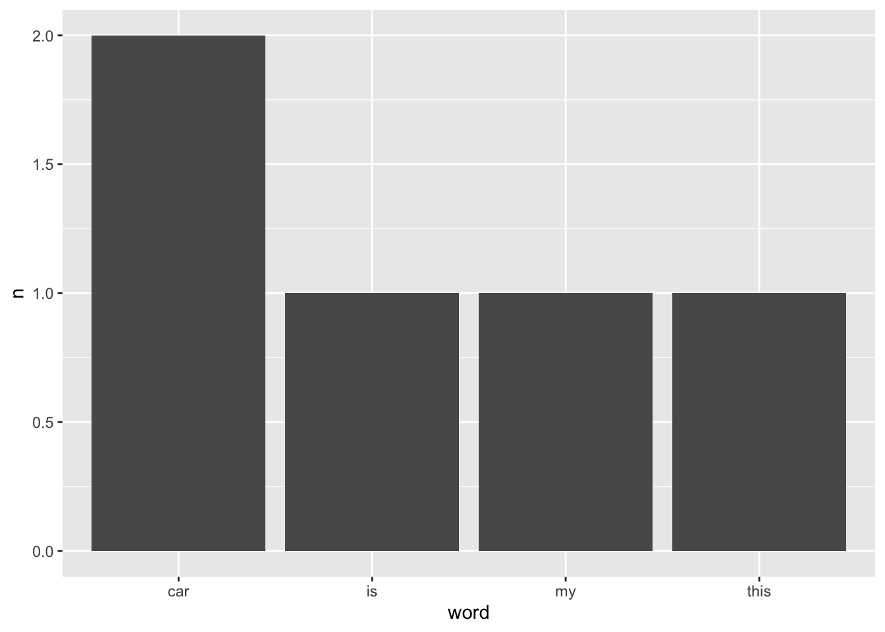
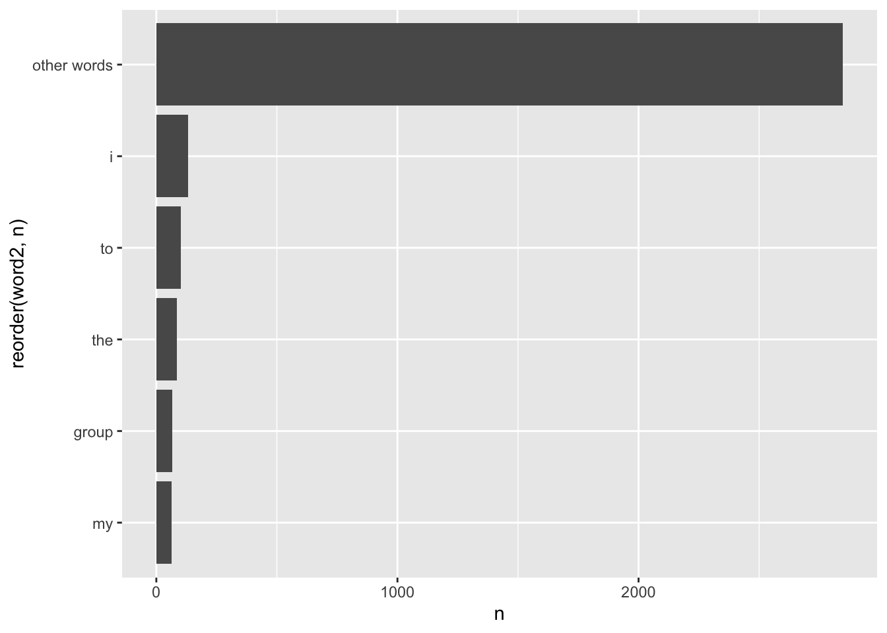
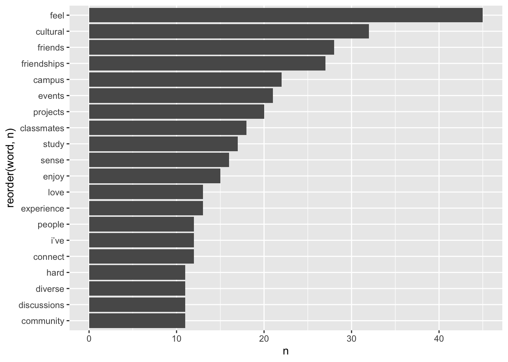
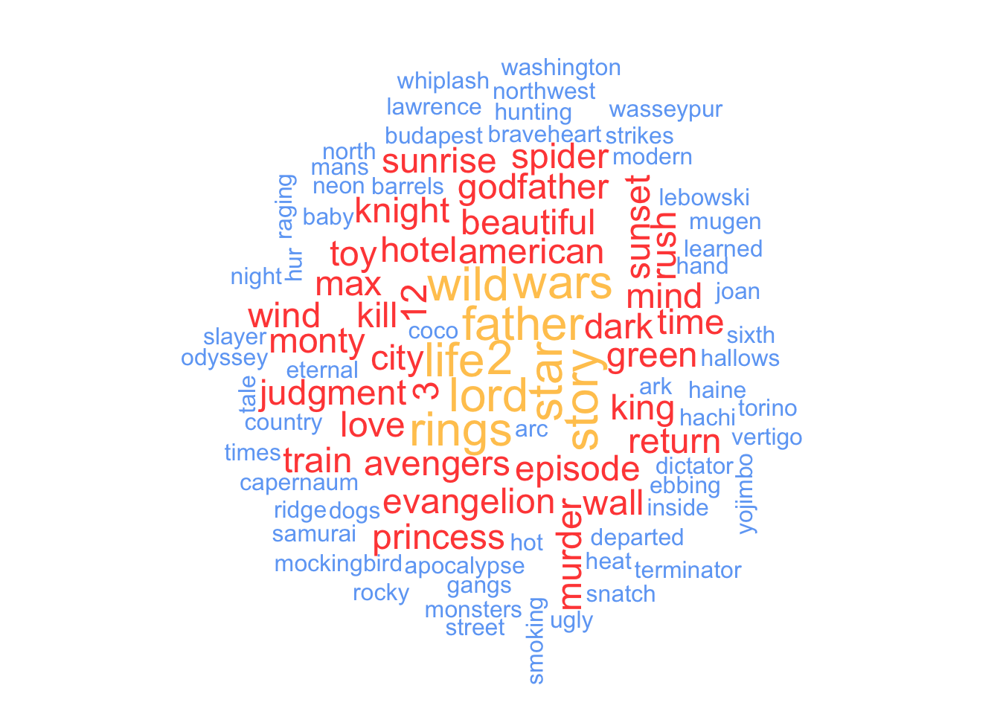
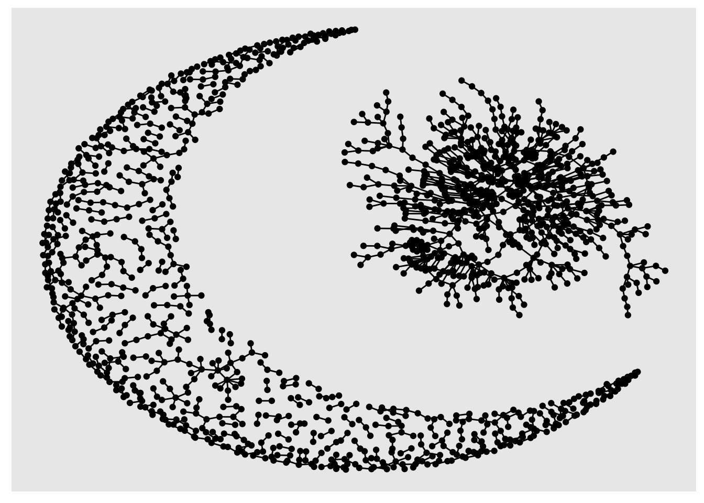
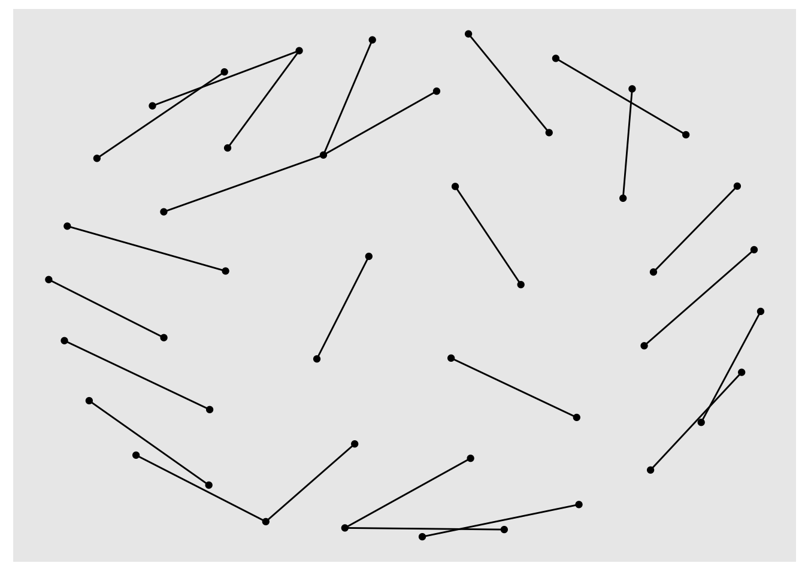
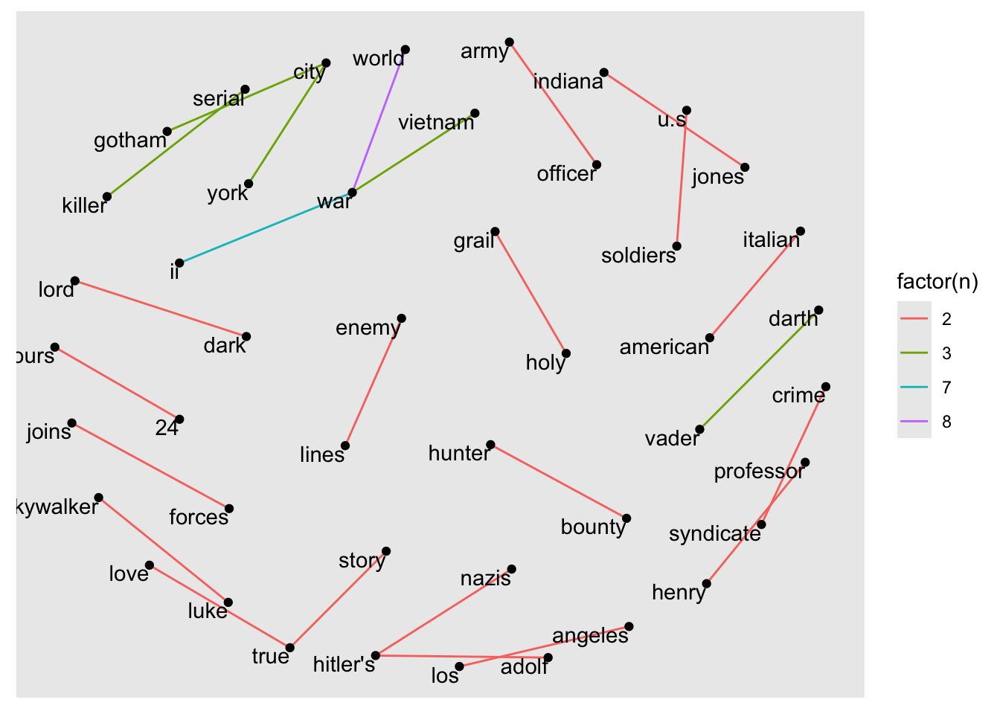

(sentence <- "This car, is my car.")[1] "This car, is my car."Conducting mixed-methods research is challenging for everyone. It requires an understanding of different methods and data types and particular knowledge in determining how one can mix different methods to improve the insights compared to a single method approach. This chapter looks at one possibility of conducting mixed-methods research in R. It is likely the most evident use of computational software for qualitative data.
While I consider myself comfortable in qualitative and quantitative research paradigms, this chapter could be somewhat uncomfortable if you are used to only one or the other approach, i.e. only quantitative or only qualitative research. However, with advancements in big data science, it is impossible to code, for example, two million tweets qualitatively. Thus, the presented methodologies should not be considered in isolation from other forms of analysis. For some, they might serve as a screening tool to sift through large amounts of data and find those nuggets of most significant interest that deserve more in-depth analysis. For others, these tools constitute the primary research design to allow to generalise to a larger population. In short: the purpose of your research will dictate the approach.
Analysing text quantitatively, though, is not new. The field of Corpus Analysis has been doing this for many years. If you happen to be a Corpus Analyst, then this section might be of particular interest.
This chapter will cover two analytical approaches for textual data:
Word frequencies, and
Word networks with n-grams.
Before we dive head-first into this exciting facet of research, we first need to understand how we can represent and work with qualitative data in R. Similar to working with tidy quantitative data, we also want to work with tidy qualitative data. This book adopts the notion of tidy text data from Silge and Robinson (2017), which follows the terminology used in Corpus Linguistics:
We (…) define the tidy text format as being a table with one-token-per-row. A token is a meaningful unit of text, such as a word, that we are interested in using for analysis, and tokenization is the process of splitting text into tokens.
In other words, what used to be an ‘observation’ is now called a ‘token’. Therefore, a token is the smallest chosen unit of analysis. The term ‘word token’ can easily be confused with ‘word type’. The first one usually represents the instance of a ‘type’. Thus, the frequency of a word type is determined by the number of its tokens. For example, consider the following sentence, which consists of five tokens, but only four types:
(sentence <- "This car, is my car.")[1] "This car, is my car."Because the word car appears twice, we have two tokens of the word type car in our dataset. However, how would we represent this in a rectangular dataset? If each row represents one token, we would expect to have five rows in our data frame. As mentioned above, the process of converting a text into individual tokens is called ‘tokenization’. To turn our text into a tokenized data frame, we have to perform two steps:
text object into a data frame, andWhile the first part can be achieved using tibble(), we need a new function to perform tokenisation. The package tidytext will be our primary tool of choice, and it comes with the function unnest_tokens(). Among many other valuable applications, unnest_tokens() can tokenize the text for us.
# Convert text object into a data frame
(df_text <- tibble(text = sentence))# A tibble: 1 × 1
text
<chr>
1 This car, is my car.# Tokenization
library(tidytext)
(df_text <- df_text |> unnest_tokens(output = word,
input = text))# A tibble: 5 × 1
word
<chr>
1 this
2 car
3 is
4 my
5 car If you paid careful attention, two elements got lost in our data during the process of tokenization: the . and , are no longer included. In most cases, commas and full stops are of less interest because they tend to carry no particular meaning when performing such an analysis. The function unnest_tokens() conveniently removes them for us and also converts all letters to lower-case.
From here onwards we find ourselves in more familiar territory because the variable word looks like any other character variable we encountered before. For example, we can count() the number of occurrences for each word.
df_text |> count(word)# A tibble: 4 × 2
word n
<chr> <int>
1 car 2
2 is 1
3 my 1
4 this 1Since we have our data nicely summarised, we can also easily visualise it using ggplot().
df_text |>
count(word) |>
ggplot(aes(x = word,
y = n)) +
geom_col()
Once we have converted our data into a data frame, all the techniques we covered for non-quantitative variables can be applied. It only requires a single function to turn ourselves into novice corpus analysts. If this sounds too easy, then you are right. Hardly ever will we retrieve a tidy dataset that allows us to work with it in the way we just did. Data cleaning and wrangling still need to be performed but in a slightly different way. Besides, there are many other ways to tokenize text than using individual words, some of which we cover in this chapter.
In the previous example, we already performed an important data wrangling process, i.e. tokenization. However, besides changing the text format, we also need to take care of other components in our data that are usually not important, for example, removing ‘stop words’. To showcase this step (and a little more), I will draw on the imdb_top_250 dataset.
In marketing, finding the right product name is a laborious task and requires careful attention. After all, our first impression of a product is partially informed by its name. Consequently, when promoting a movie, one might wonder whether more popular words in movie titles can lead to greater success, i.e. a higher ranking on IMDb. With the help of the imdb_top_250 dataset, we can empirically investigate this matter. However, we first have to tidy the data and then clean it. An essential step in this process is the removal of ‘stop words’.
‘Stop words’ are words that we want to exclude from our analysis, because they carry no particular meaning. The tidytext package comes with a data frame that contains common stop words in English.
stop_words# A tibble: 1,149 × 2
word lexicon
<chr> <chr>
1 a SMART
2 a's SMART
3 able SMART
4 about SMART
5 above SMART
6 according SMART
7 accordingly SMART
8 across SMART
9 actually SMART
10 after SMART
# ℹ 1,139 more rowsIt is important to acknowledge that there is no unified standard of what constitutes a stop word. The data frame stop_words covers many words, but in your research context, you might not even want to remove them. For example, if we aim to identify topics in a text, stop words would be equivalent to white noise, i.e. many of them are of no help to identify relevant topics. Instead, stop words would confound our analysis. For obvious reasons, stop words highly depend on the language of your data. Thus, what works for English will not work for German, Russian or Chinese. You will need a separate set of stop words for each language.
The removal of stop words can be achieved with a function we already know: anti-join(). In other words, we want to subtract all words from stop_words from a given text. Let’s begin with the tokenization of our movie titles.
titles <-
imdb_top_250 |>
unnest_tokens(word, title) |>
select(imdb_rating, word)
titles# A tibble: 712 × 2
imdb_rating word
<dbl> <chr>
1 9.3 the
2 9.3 shawshank
3 9.3 redemption
4 9.2 the
5 9.2 godfather
6 9 the
7 9 dark
8 9 knight
9 9 the
10 9 godfather
# ℹ 702 more rowsOur new data frame has considerably more rows, i.e. 712, which hints at around 3 words per title on average. If you are the curious type, like me, we already can peek at the frequency of words in our dataset.
titles |>
mutate(word2 = fct_lump_n(word, 5,
other_level = "other words")) |>
count(word2) |>
ggplot(aes(x = reorder(word2, n),
y = n)) +
geom_col() +
coord_flip()
The result is somewhat disappointing. None of these words carries any particular meaning because they are all stop words. Thus, we must clean our data before conducting such an analysis.
I also sneaked in a new function called fct_lump_n() from the forcats package. It creates a new factor level called other words and ‘lumps’ together all the other factor levels. You likely have seen plots before which show a category called ‘Other’. We usually apply this approach if we have many factor levels with very low frequencies. It would not be meaningful to plot 50 words as a barplot which only occurred once in our data. They are less important. Thus, it is sometimes meaningful to pool factor levels together. The function fct_lump_n(word, 5) returns the five most frequently occurring words and pools the other words together into a new category. There are many different ways to ‘lump’ factors. For a detailed explanation and showcase of all available alternatives, have a look at the forcats website.
In our next step, we have to remove stop words using the stop_words data frame and apply the function anti_join().
titles_no_sw <- anti_join(titles, stop_words,
by = "word")
titles_no_sw# A tibble: 443 × 2
imdb_rating word
<dbl> <chr>
1 9.3 shawshank
2 9.3 redemption
3 9.2 godfather
4 9 dark
5 9 knight
6 9 godfather
7 9 ii
8 9 12
9 9 angry
10 8.9 lord
# ℹ 433 more rowsThe dataset shrank from 712 rows to 443 rows. Thus, almost 38% of our data was actually noise. With this cleaner dataset, we can now look at the frequency count again.
titles_no_sw |>
count(word) |>
filter(n > 1) |>
ggplot(aes(x = reorder(word, n),
y = n)) +
geom_col() +
coord_flip()
To keep the number of bars somewhat manageable, I removed those words with more less than 1 occurrence in the dataset. Some of the most frequently occurring words include, for example, wild, wars, story, star, rings, lords. If you know Hollywood movies of the past, you will notice that two movies likely cause this result: The ‘Star Wars’ and ‘Lord of the Rings’ series. We also have numbers included in our dataset. Sometimes these are worth removing, but in this case, the number 2 likely indicates a sequel to another movie. Thus, it provides essential information.
Another commonly used method for visualising word frequencies are word clouds. You likely have seen them before since they are very popular, especially for websites and poster presentations. Word clouds use the frequency of words to determine the font size of each word and arrange them so that it resembles the shape of a cloud. The package wordcloud and its function wordcloud() make this very easy. You can modify a word cloud in several ways. Here are some settings I frequently change for my data visualisations:
random.order = FALSE: This ensures that the most important words appear in the middle of the plot.
scale = c(): This attribute determines the size difference between the most and least frequent words in the dataset.
min.freq: This setting determines which words are included based on their frequency, which is helpful if you have many words to plot.
max.words: This attribute limits the number of words that should be plotted and is also useful in cutting down on large datasets.
colors: This setting allows you to provide custom colours for different frequencies of words. This substantially improves the readability of your data visualisation.
To create a word cloud you have to provide at least a column with words and a column with their frequencies. All other settings are entirely customisable and optional. Here is an example based on the data we just used for our bar plot.
# Create a dataframe with the word count
word_frequencies <-
titles_no_sw |>
count(word)
# Plot word cloud
wordcloud::wordcloud(words = word_frequencies$word,
freq = word_frequencies$n,
random.order = FALSE,
scale = c(2, 0.5),
min.freq = 1,
max.words = 100,
colors = c("#6FA8F5",
"#FF4D45",
"#FFC85E")
)
After preparing and visualising our data, it is time to perform our analysis. We want to know whether certain words are associated with higher imdb_ratings. If we use the function count() we will lose the variable imdb_rating(). Thus, we have to do this in three steps:
We create the frequencies for each word with count(), which we already did.
Then, we left_join() the word frequencies with the original dataset to add the word frequencies.
Compute a correlation using correlation() from the correlation package.
# Combine word_frequencies with titles_no_sw
titles_no_sw <- left_join(titles_no_sw, word_frequencies,
by = "word")
titles_no_sw# A tibble: 443 × 3
imdb_rating word n
<dbl> <chr> <int>
1 9.3 shawshank 1
2 9.3 redemption 1
3 9.2 godfather 2
4 9 dark 2
5 9 knight 2
6 9 godfather 2
7 9 ii 1
8 9 12 2
9 9 angry 1
10 8.9 lord 3
# ℹ 433 more rows# Compute the correlation of imdb_rating and n
corr <-
titles_no_sw |>
select(imdb_rating, n) |>
correlation::correlation()
corr# Correlation Matrix (pearson-method)
Parameter1 | Parameter2 | r | 95% CI | t(441) | p
-------------------------------------------------------------------
imdb_rating | n | 0.18 | [0.09, 0.27] | 3.95 | < .001***
p-value adjustment method: Holm (1979)
Observations: 443# Interpret the effect size
effectsize::interpret_r(corr$r, rules = "cohen1988")[1] "small"
(Rules: cohen1988)Considering our correlation analysis, we find that more frequently used words tend to be significantly more successful. However, the effect size is too small to be of particular relevance. Besides, as mentioned before, the frequency of words is skewed towards two movie franchises, both of which have been very successful. Thus, we have to be content that there is no secret formula to create movie titles, i.e. choosing popular words from movie titles will not result in a better ranking.
Besides looking at words in isolation, it is often more interesting to understand combinations of words to provide much-needed context. For example, the difference between ‘like’ and ‘not like’ can be crucial when trying to understand sentiments in data. The co-occurrence of words follows the same idea as correlations, i.e. how often one word appears together with another. If the frequency of word pairs is high, the relationship between these two words is strong. The technical term for looking at tokens that represent pairs for words is ‘bigram’. If we look at more than two words, we would consider them as ‘n-gram’, where the ‘n’ stands for the number of words.
Creating a bigram is relatively simple in R and follows similar steps as counting word frequencies:
unnest_tokens(),word1 and word2, using separate().filter() for word1 and word2.word1 and word2 into one column again, i.e. unite() them. (optional)count().There are a lot of new functions covered in this part. However, by now, you likely understand how they function already. Let’s proceed step-by-step. For this final example about mixed-methods research, we will look at the synopsis of movies provided by IMDb. Since we already have the text in our data frame, we can skip step one. Next, we need to engage in tokenization. While we use the same function as before, we need to provide different arguments to retrieve bigrams. As before, we need to define an output column and an input column. In addition, we also have to provide the correct type of tokenization, i.e. determine token, which we need to set to "ngrams". We also need to define the n in ‘ngrams’, which will be 2 for bigrams. After this, we apply count() to our variable bigram, and we achieved our task. If we turn this into R code, we get the following (with considerably less characters than its explanation):
# Create bigrams from variable synopsis
synopsis <-
imdb_top_250 |>
unnest_tokens(bigram, synopsis, token = "ngrams", n = 2) |>
select(bigram)
synopsis# A tibble: 6,094 × 1
bigram
<chr>
1 two imprisoned
2 imprisoned men
3 men bond
4 bond over
5 over a
6 a number
7 number of
8 of years
9 years finding
10 finding solace
# ℹ 6,084 more rows# Inspect frequency of bigrams
synopsis |> count(bigram, sort = TRUE)# A tibble: 5,035 × 2
bigram n
<chr> <int>
1 in the 31
2 of the 27
3 in a 25
4 of a 25
5 and his 18
6 on a 17
7 with the 17
8 of his 16
9 to find 15
10 a young 14
# ℹ 5,025 more rowsAs before, the most frequent bigrams are those that contain stop words. Thus, we need to clean our data and remove them. This time, though, we face the challenge that the variable bigram has two words and not one. Thus, we cannot simply use anti_join() because the dataset stop_words only contains individual words, not pairs. To remove stop words successfully, we have to separate() the variable into two variables so that each word has its own column. The package tidyr makes this is an effortless task.
bigram_split <- synopsis |>
separate(col = bigram,
into = c("word1", "word2"),
sep = " ")
bigram_split# A tibble: 6,094 × 2
word1 word2
<chr> <chr>
1 two imprisoned
2 imprisoned men
3 men bond
4 bond over
5 over a
6 a number
7 number of
8 of years
9 years finding
10 finding solace
# ℹ 6,084 more rowsWith this new data frame, we can remove stop words in each variable. Of course, we could use anti_join() as before and perform the step twice, but there is a much more elegant solution. Another method to compare values across vectors/columns is the %in% operator. It is very intuitive to use because it tests whether values in the variable on the left of %in% exist in the variable to the right. Let’s look at a simple example. Assume we have an object that contains the names of people related to family and work. We want to know whether people in our family are also found in the list of work. If you remember Table @ref(tab:logical-operators-r), which lists all logical operators, you might be tempted to try family == work. However, this would assess the object in its entirety and not tell us which values, i.e. which names, can be found in both lists.
# Define the two
family <- tibble(name = c("Fiona", "Ida", "Lukas", "Daniel"))
work <- tibble(name = c("Fiona", "Katharina", "Daniel"))
# Compare the two objects using '=='
family$name == work$nameWarning in family$name == work$name: longer object length is not a multiple of
shorter object length[1] TRUE FALSE FALSE FALSEAll but one value in family and work are not equal, i.e. they are FALSE. This is because == compares the values in order. If we changed the order, some of the FALSE values would turn TRUE. In addition, we get a warning telling us that these two objects are not equally long because family holds four names, while work contains only three names. Lastly, the results are not what we expected because Fiona and Daniel appear in both objects. Therefore we would expect that there should be two TRUE values. In short, == is not the right choice to compare these two objects.
If we use %in% instead, we can test whether each name appears in both objects, irrespective of their length and the order of the values.
# Compare the two objects using '%in%'
family$name %in% work$name[1] TRUE FALSE FALSE TRUEIf we want R to return the values that are the same across both objects, we can ask: which() names are the same?
# Compare the two objects using '%in%'
(same_names <- which(family$name %in% work$name))[1] 1 4The numbers returned by which() refer to the position of the value in our object. In our case, the first value in family is Fiona, and the fourth value is Daniel. It is TRUE that these two names appear in both objects. If you have many values that overlap in a large dataset, you might not want to know the row number but retrieve the actual values. This can be achieved by slice()ing our dataset, i.e. filtering our data frame by providing row numbers.
# Retrieve the values which exist in both objects
family |>
slice(same_names)# A tibble: 2 × 1
name
<chr>
1 Fiona
2 DanielWhile this might be a nice little exercise, it is important to understand how %in% can help us remove stop words. Technically, we try to achieve the opposite, i.e. we want to keep the values in word1 and word2 that are not a word in stop_words. If we use the language of dplyr, we filter() based on whether a word in bigram_split is not %in% the data frame stop_words. Be aware that %in% requires a variable and not an entire data frame to work as we intend.
bigram_cleaned <-
bigram_split |>
filter(!word1 %in% stop_words$word) |>
filter(!word2 %in% stop_words$word)
bigram_cleaned <- bigram_cleaned |>
count(word1, word2, sort = TRUE)
bigram_cleaned# A tibble: 1,246 × 3
word1 word2 n
<chr> <chr> <int>
1 world war 8
2 war ii 7
3 darth vader 3
4 gotham city 3
5 serial killer 3
6 vietnam war 3
7 york city 3
8 24 hours 2
9 adolf hitler's 2
10 army officer 2
# ℹ 1,236 more rowsThe result is a clean dataset, which reveals that world and war are the most common bigram in the synopsis of our Top 250 IMDb movies.
Sometimes we might wish to re-unite() the two columns that we separated. For example, when plotting the results into a ggplot(), we need both words in one column1 to use the actual bigrams as labels.
bigram_cleaned |>
unite(col = bigram,
word1, word2,
sep = " ")# A tibble: 1,246 × 2
bigram n
<chr> <int>
1 world war 8
2 war ii 7
3 darth vader 3
4 gotham city 3
5 serial killer 3
6 vietnam war 3
7 york city 3
8 24 hours 2
9 adolf hitler's 2
10 army officer 2
# ℹ 1,236 more rowsSo far, we primarily looked at frequencies as numbers in tables or as bar plots. However, it is possible to create network plots of words with bigrams by drawing a line between word1 and word2. Since there will be overlaps across bigrams, they would mutually connect and create a network of linked words.
I am sure you have seen visualisations of networks before but might not have engaged with them on a more analytical level. A network plot consists of ‘nodes’, which represent observations in our data, and ‘edges’, which represent the link between nodes. We need to define both to create a network.
Unfortunately, ggplot2 does not enable us to easily create network plots, but the package ggraph offers such features using the familiar ggplot2 syntax. Network plots are usually made using specific algorithms to arrange values in a network efficiently. Thus, if you want your plots to be reproducible, you have to set.seed() in advance. This way, random aspects of some algorithms are set constant.
There is one more complication, but with a simple solution. The function ggraph(), which is an equivalent to ggplot(), requires us to create a graph object that can be used to plot networks. The package igraph has a convenient function that produces a graph_from_data_frame(). As a final step we need to choose a layout for the network. This requires some experimentation. Details about different layouts and more for the ggraph package can be found on its website.
library(ggraph)
# Make plot reproducible
set.seed(1234)
# Create the special igraph object
graph <- igraph::graph_from_data_frame(bigram_cleaned)
# Plot the network graph
graph |>
ggraph(layout = "kk") + # Choose a layout
geom_edge_link() + # Draw lines between nodes
geom_node_point() # Add node points
The result looks like a piece of modern art. Still, it is not easy to understand what the plot shows us. Thus, we need to remove some bigrams that are not so frequent. For example, we could remove those that only appear once.
# Filter bigrams
network_plot <- bigram_cleaned |>
filter(n > 1) |>
igraph::graph_from_data_frame()
# Plot network plot
network_plot |>
ggraph(layout = "kk") +
geom_edge_link() +
geom_node_point()
It seems that many bigrams were removed. Thus, the network plot looks much smaller and less busy. Nevertheless, we cannot fully understand what this visualisation shows because there are no labels for each node. We can add them using geom_node_text(). I also recommend offsetting the labels with vjust (vertical adjustment) and hjust (horizontal adjustment), making them easier to read. To enhance the network visualisation further, we could colour the edges based on the frequency of each token.
# Plot network plot
network_plot |>
ggraph(layout = "kk") +
geom_edge_link(aes(col = factor(n))) +
geom_node_point() +
geom_node_text(aes(label = name),
vjust = 1,
hjust = 1)
The final plot shows that war and other military aspects, e.g. soldiers, army are very prevalent in our dataset. Besides, we also find some famous movie characters in our visualisation, such as darth vader, luke skywalker or indiana jones.
Our example is a simple analysis based on a relatively small ‘corpus’, i.e. a small dataset. However, the application of n-grams in larger datasets can reveal topic areas and links between them. There are more approaches to exploring topics in large datasets, for example, ‘topic modelling’, which are far more complex, but offer more sophisticated analytical insights.
This chapter can only be considered a teaser for mixed-methods research in R. There is much more to know and much more to learn. If this type of work is of interest, especially when working with social media data or historical text documents, there are several R packages I can recommend:
tm: This text mining package includes many functions that help to explore documents systematically.
quanteda: This package offers natural language processing features and incorporates functions that are commonly seen in corpus analysis. It also provides tools to visualise frequencies of text, for example, wordclouds.
topicmodels: To analyse topics in large datasets, it is necessary to use special Natural Language Processing techniques. This package offers ways to perform Latent Dirichlet Allocation (LDA) and Correlated Topic Models (CTM). Both are exciting and promising pathways to large-scale text analysis.
The tidytext package we used above also has a lot more to offer than what we covered, for example, performing sentiment analyses.
If you want to explore the world of textual analysis in greater depth, there are two fantastic resources I wholeheartedly can recommend:
Text mining with tidy data principles: This free online course introduces additional use cases of the tidytext package by letting you work with data interactively right in your browser. Julia Silge developed these materials.
Supervised Machine Learning for Text Analysis in R: This book is the ideal follow-up resource if you worked your way through Silge and Robinson (2017). It introduces the foundations of natural language analysis and covers advanced text analysis methods such as regression, classification, and deep learning.
I hope I managed to showcase the versatility of R to some degree in this chapter. Needless to say, there is also a lot I still have to learn, which makes using R exciting and, more than once, has inspired me to approach my data in unconventional ways.
With glue::glue() you can also combine values from two different columns directly in ggplot(), but it seems simpler to just use unite(). Remember, there is always more than one way of doing things in R.↩︎